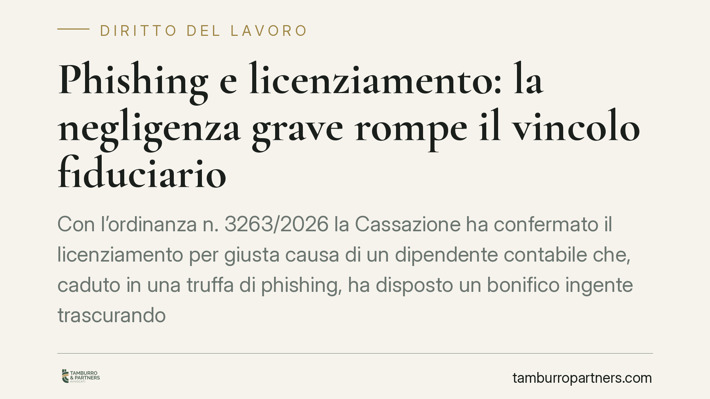

Phishing e licenziamento: la negligenza grave rompe il vincolo fiduciario
Con l'ordinanza n. 3263/2026 la Cassazione ha confermato il licenziamento per giusta causa di un dipendente contabile che, caduto in una truffa di phishing, ha disposto un bonifico ingente trascurando evidenti segnali di allarme. La Corte valorizza la negligenza grave come causa di rottura del vincolo fiduciario, anche in assenza di formazione aziendale specifica.

Il caso
Un dipendente addetto alla contabilità riceve una comunicazione fraudolenta e, seguendone le istruzioni, esegue un bonifico di importo rilevante. L'operazione presentava diversi indicatori di anomalia: richieste anomale, modalità di contatto insolite, pressione a procedere con urgenza. Il datore di lavoro contesta la condotta e procede al licenziamento per giusta causa. La Cassazione, con l'ordinanza n. 3263/2026, ne conferma la legittimità.
Il punto centrale non è l'esistenza della truffa in sé, ma il comportamento del lavoratore di fronte a segnali che una persona diligente, nel suo ruolo, avrebbe dovuto riconoscere.
Inquadramento normativo
La decisione poggia su tre norme del codice civile.
L'art. 2119 c.c. disciplina il recesso per giusta causa, ossia la condotta così grave da non consentire la prosecuzione, nemmeno temporanea, del rapporto. È il presupposto del licenziamento senza preavviso.
L'art. 2104 c.c. impone al lavoratore l'obbligo di diligenza, da valutarsi in rapporto alla natura della prestazione e all'interesse dell'impresa. Per un addetto alla contabilità, la soglia di attenzione richiesta nella gestione dei pagamenti è elevata: maneggiare flussi finanziari comporta un dovere di controllo rafforzato.
L'art. 2697 c.c. regola l'onere della prova: spetta al datore dimostrare i fatti posti a fondamento del licenziamento, mentre il lavoratore deve provare le circostanze che ne escludono o attenuano la responsabilità.
La Corte ha ritenuto che la negligenza fosse di tale intensità da incrinare il rapporto fiduciario, elemento che sorregge in particolare le mansioni di fiducia come quelle contabili. Rilevante anche il riferimento al CCNL Confapi PMI applicato al rapporto, che tipizza le condotte sanzionabili.
Perché la formazione non salva il lavoratore
Il passaggio più significativo riguarda l'assenza di formazione aziendale in materia di sicurezza informatica. Il lavoratore sosteneva che l'azienda non lo avesse istruito sui rischi del phishing.
La Cassazione non ha accolto l'argomento. Il ragionamento è netto: alcuni segnali di allarme non richiedono competenze tecniche specialistiche per essere colti. Un contabile esperto deve riconoscere un'operazione anomala a prescindere da un corso dedicato, perché la cautela nei pagamenti rientra nel nucleo della sua diligenza professionale.
La mancanza di formazione, dunque, non trasforma automaticamente la negligenza grave in colpa lieve. Non è una scusante assoluta, ma un elemento che il giudice valuta nel contesto complessivo.
Implicazioni pratiche
Per i datori di lavoro, la pronuncia conferma che la giusta causa può fondarsi anche su un errore gravemente colposo, non solo su condotte dolose. Resta però centrale la proporzionalità: il licenziamento regge se la negligenza è effettivamente macroscopica e documentata.
Per i lavoratori con mansioni di fiducia, il messaggio è chiaro. L'essere vittima di una truffa non esclude la responsabilità disciplinare quando i segnali di pericolo erano riconoscibili e sono stati ignorati.
Attenzione, però, a non leggere la decisione come una regola automatica. Ogni caso va valutato sui fatti concreti: entità del danno, chiarezza dei segnali, ruolo del dipendente, eventuali procedure interne disattese.
Cosa fare in concreto
- Datori di lavoro: adottate procedure scritte sui pagamenti (doppia firma, verifica telefonica su canale indipendente per i bonifici rilevanti). Oltre a ridurre il rischio, rafforzano la posizione in sede disciplinare.
- Prima della contestazione: documentate con precisione i segnali di anomalia ignorati. La valutazione di gravità richiesta dall'art. 2119 c.c. va provata, non affermata.
- Formazione: predisponete e tracciate interventi formativi sul rischio informatico. Riducono gli errori e chiariscono gli standard attesi.
- Lavoratori con mansioni finanziarie: sospendete ogni operazione anomala e verificatela con un superiore prima di eseguirla. In caso di dubbio, il blocco preventivo è sempre preferibile.
- In caso di contestazione ricevuta: consigliamo di farsi assistere tempestivamente per valutare proporzionalità della sanzione e correttezza della procedura disciplinare.
---
*Contributo informativo a cura di Tamburro & Partners - Avv. Giuseppe Tamburro. Non costituisce parere legale.*
Ogni storia di lavoro ha i suoi tempi.
Se gestisci HR e vuoi un confronto su contenzioso, ispezioni o licenziamenti, scrivi allo studio. Ti rispondiamo entro un giorno lavorativo.